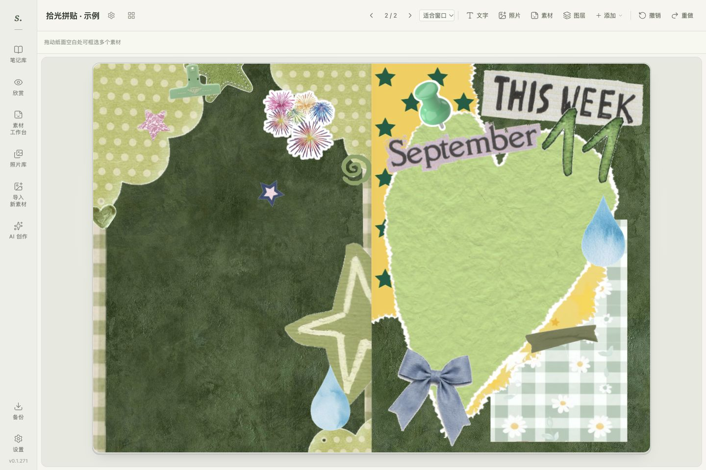
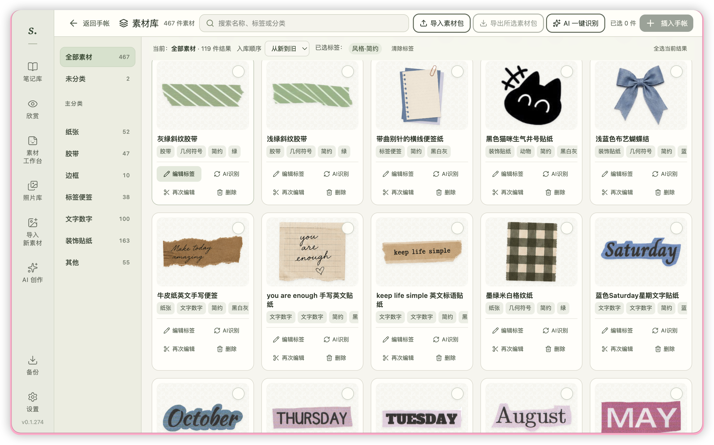

自由拼贴
文字、照片、贴纸与底纸，按自己的喜好摆放。
一段心情、一张照片、一枚喜欢的贴纸。
在拾光，把零碎的日常，拼成属于你的手帐。
Mac：Apple 芯片 · macOS 26+
Windows：10 / 11 · x64 · 安装版支持自动更新

文字、照片、贴纸与底纸，按自己的喜好摆放。
导入图片，裁出小元素，收进自己的素材库。
立体翻阅每一页，也可以导出图片留念。

独立桌面应用 · Apple 芯片 · 451 MB
下载 Mac 应用自动更新安装版 · x64 · 424 MB
下载 Windows 安装版411 款素材 · 32 MB
下载素材包Mac：macOS 26+ · Apple 芯片｜Windows：10 / 11 · x64
Windows：首次安装本版后，后续更新会自动下载。
测试版未签名／公证，首次打开可能出现系统提示。